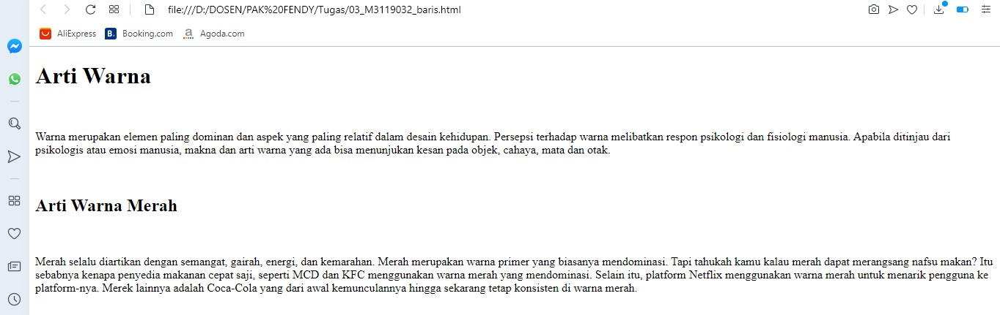

Membuat Baris Kosong
Tag Baris kosong atau br (singkatan dari break) digunakan untuk memisahkan kedua paragraf atau bisa
untuk memisahkan sebuah bagian text dengan text lain.
Codingan
<!DOCTYPE html>
<html>
<head>
<title>Membuat Baris Kosong</title>
</head>
<body>
<h1>Arti Warna</h1>
<br/>
<p>
Warna merupakan elemen paling dominan dan aspek yang paling relatif dalam desain kehidupan.
Persepsi terhadap warna melibatkan respon psikologi dan fisiologi manusia.
Apabila ditinjau dari psikologis atau emosi manusia, makna dan arti warna yang ada bisa menunjukan kesan pada objek, cahaya, mata dan otak.
</p>
<br/>
<h2>Arti Warna Merah</h2>
<br/>
<p>
Merah selalu diartikan dengan semangat, gairah, energi, dan kemarahan.
Merah merupakan warna primer yang biasanya mendominasi.
Tapi tahukah kamu kalau merah dapat merangsang nafsu makan?
Itu sebabnya kenapa penyedia makanan cepat saji, seperti MCD dan KFC menggunakan warna merah yang mendominasi.
Selain itu, platform Netflix menggunakan warna merah untuk menarik pengguna ke platform-nya.
Merek lainnya adalah Coca-Cola yang dari awal kemunculannya hingga sekarang tetap konsisten di warna merah.
</p>
</body>
</html>
Hasil codingan

Analisis
Pada script diatas menggunakan tag br untuk memasukkan fungsi enter atau diguakan untuk pindah ke
baris baru. Tampak gambar diatas menggunakan baris kosong sebanyak 3 baris.
Back